GRChombo team
GRChombo is a Numerical GR code developed by a team of researchers from:
Core developers
 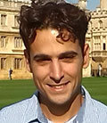
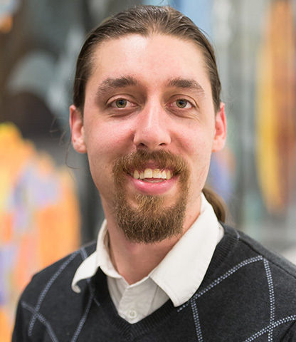
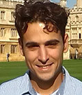
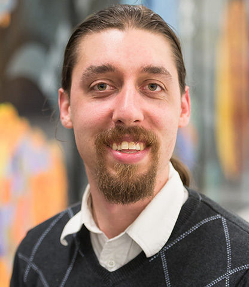

 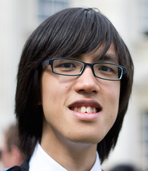
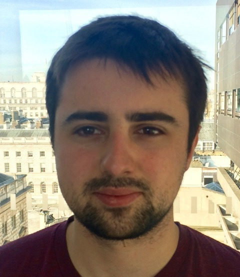
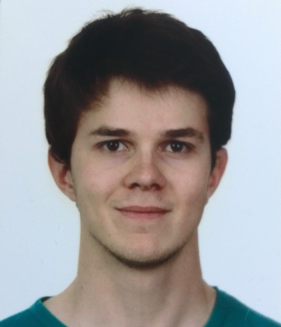
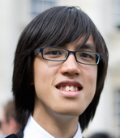
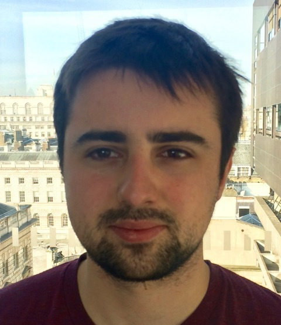
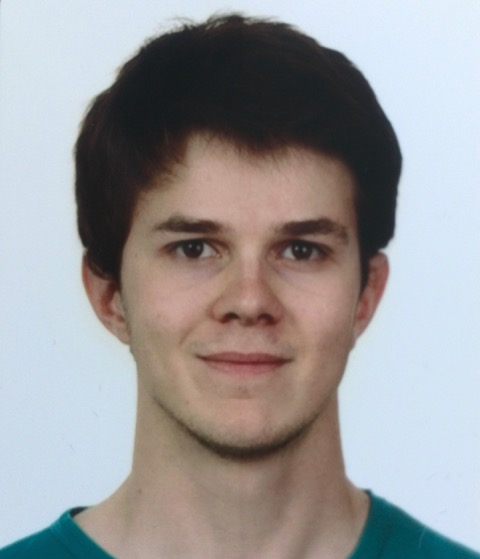
Core developers from left to right: Katy Clough (KCL), Pau Figueras (QMUL), Hal Finkel (ANL), Markus Kunesch (Cambridge), Eugene Lim (KCL), Saran Tunyasuvunakool (QMUL), James Cook (KCL), Thomas Helfer (KCL)
Collaborators
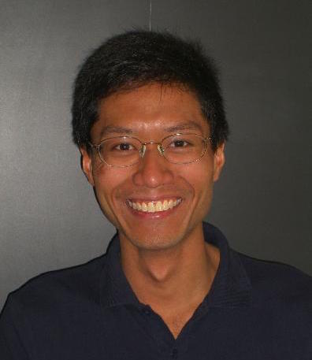 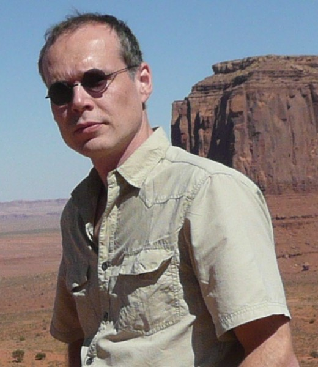 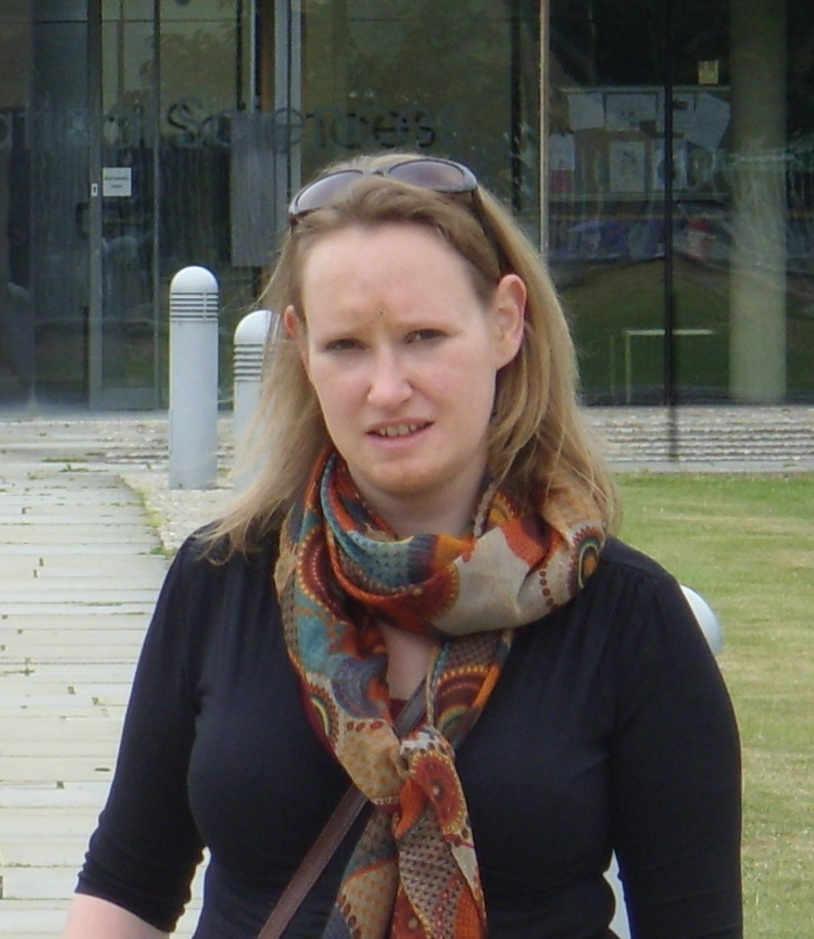 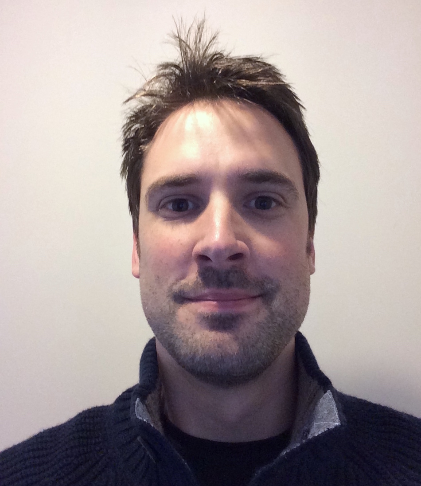Collaborators from left to right: Hans Bantilan (QMUL), Ulrich Sperhake (Cambridge), Helvi Witek (Nottingham), Benjamin Withers (QMUL)
GRChombo is primarily developed on the COSMOS supercomputer at Department of Applied Mathematics and Theoretical Physics (DAMTP) at the University of Cambridge. The GRChombo team is grateful for the continuing assistance of the team of the Intel® Parallel Computing Center at the University of Cambridge, in particular Juha Jäykkä, James Briggs, and Kacper Kornet. The COSMOS Shared Memory system is operated on behalf of the STFC DiRAC HPC Facility. This equipment is funded by BIS National E-infrastructure capital grant ST/J005673/1 and STFC grants ST/H008586/1, ST/K00333X/1. Our research also uses resources of the Argonne Leadership Computing Facility, which is a DOE Office of Science User Facility supported under Contract DE-AC02-06CH11357.